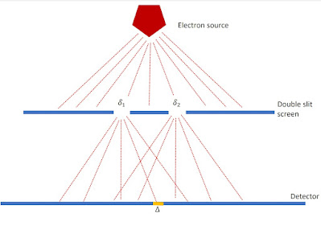
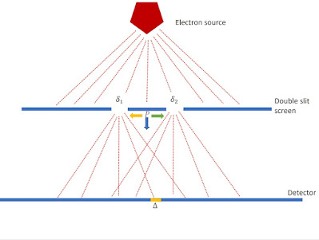

1 A Probabilistic Reconstruction of Quantum Mechanics
In this chapter familiarity with standard non-relativistic quantum mechanics will be assumed. This will provide the background for are reconstruction that is a generalisation of classical probability of events.
The mathematical formulation to be discussed here is a modification of Kochen’s Reconstruction of Quantum Mechanics (Kochen 2015). It concentrates on a mathematical formulation using a union of \(\sigma\)-algebras that he calls a complex. In Kochen’s reformulation, it is through the interaction of a quantum system under consideration with another system that properties gain physical values. Such properties are said by Kochen to be relational or extrinsic, as opposed to fixed intrinsic properties such as the charge of an electron.
While the mathematics depends heavily on the reconstruction by Kochen, it makes use of von Neumann \(*\)-algebras (see Thirring (Thirring 1979)) rather than the Boolean algebras used by Kochen. This choice may seem unnecessarily mathematical for non-relativistic quantum mechanics but it is made to avoid any hint of a logical interpretation and will be useful when discussiong relativistic quantum mechanics and field theory. This formulation also differs from Kochen’s in the treatment and assignment of both intrinsic and extrinsic properties. The extrinsic properties will be treated here as an actualization of potential, dispositional properties, of the quantum entity that are shaped by its context. Dispositional properties, represented by operators and conttingent properties, are not fixed but can take on different values depending on the context of the interaction. The intrinsic properties, such as mass and charge, are fixed and do not change with context.
1.1 Observables and \(\sigma\)-Complexes
In the mathematical formulation of quantum mechanics, a physical system, \(\mathbf{S}\), is characterized by a list of properties (called observables in standard quantum mechanics) that can be represented by abstract 1 self-adjoint operators:
\[\mathcal{O}_\mathbf{S}=\{ \hat{X}_i = \hat{X}^*_i \mid i \in \mathcal{I}_\mathbf{S}\},\]
with \(\mathcal{I}_\mathbf{S}\) a set of indices depending on \(\mathbf{S}\), where every operator \(\hat{X} \in \mathcal{O}_\mathbf{S}\) represents a physical property characteristic of \(\mathbf{S}\), such as the total momentum, energy, or spin of all particles belonging to an ensemble of (possibly infinitely many) particles constituting the system \(\mathbf{S}\). In standard quantum mechanics there are properties that are not represented by abstract operators, such as charge and mass. In non-formal presentation the space on which operators operate is often left unspecified in strict mathematical terms. In the formal presentation here, the space on which the operators operate is a separable Hilbert space \(\mathcal{H}_\mathbf{S}\) associated with the system \(\mathbf{S}\). A system is a related collectiom of quantum objects
At every time \(t\), there is a representation of \(\mathcal{O}_\mathbf{S}\) by self-adjoint operators acting on a separable Hilbert space \(\mathcal{H}_\mathbf{S}\):
\[\mathcal{O}_\mathbf{S} \ni \hat{X}_i \mapsto X_i = X^*_i \in \mathcal{A}(\mathcal{H}_\mathbf{S}),\]
where \(\mathcal{A}(\mathcal{H}_\mathbf{S})\) is the \(*\)-algebra of all bounded operators acting on \(\mathcal{H}_\mathbf{S}\).
In general, the operators in the \(*\)-algebra do not all commute. This has deep physical consequences:
- Properties that cannot appear together are represented in quantum mechanics by self-adjoint operators that do not all commute.
- The sets of operators that do commute provide a set of properties for a measurable mathematical structure which is a \(\sigma\)-algebra.
The \(\sigma\)-algebra is essential to constructing mathematical probability models using the Kolmogorov axiomization (Kolmogorov 2018). Therefore, each collection of commuting observables of the object has an associated \(\sigma\)-algebra. So, a collection of \(\sigma\)-algebras that together capture all the property values associated with the object covers all possible events for that object in itself. This structure is the minimal one which contains all the \(\sigma\)-algebras arising from all the properties of the system.
Each dispositional property of an object, such as spin or position, has a \(\sigma\)-algebra of possible values that appear in interaction with other objects. All these \(\sigma\)-algebras form a complex property structure for the object under consideration. The formal definition of this notion is as follows:
Definition: Let \(F\) be a family of \(\sigma\)-algebras. The \(\sigma\)-complex \(Q_F\) based on \(F\) is the union, \(\cup B\), of all \(\sigma\)-algebras \(B\) lying in \(F\):
\[Q_F = \bigcup_{B \in F} B.\]
Generally, the family \(F\) is left implicit, and reference is simply made to a \(\sigma\)-complex \(Q\); however, the family \(F\) does tie the complex to an object that has properties that take values depending on the set of possible interactions that it can have with other objects. Usually, \(\sigma\)-complexes that are closed under the formation of sub-\(\sigma\)-algebras are discussed. It is possible, in any case, to always close a \(\sigma\)-complex by adding all its sub-\(\sigma\)-algebras. This complex will include all the possible values that the dispositional properties of a particle can take in all possible interaction contexts. \(B\) denotes the \(\sigma\)-algebra relating to the property values of a particular (commuting) set of observables of the particle or system.
In the mathematical formulation of quantum mechanics, \(\mathcal{H}\) is a Hilbert space. For the quantum object under consideration, all properties are represented by self-adjoint operators and possible events are represented by projection operators. For pairwise commuting projection operators, closure under the operation of orthogonal complement and countable product \(\prod_i \pi_i\) forms a \(\sigma\)-algebra. The family of all such \(\sigma\)-algebras forms a \(\sigma\)-complex, \(Q(\mathcal{H})\), for the object in its possible interaction contexts.
1.2 Proposition
In quantum mechanics, the operators representing the possible values of the properties of a system form the \(\sigma\)-complex \(Q(\mathcal{H})\) of projections of the Hilbert space \(\mathcal{H}\) of the system.
It has been shown (Kochen 2015) that this proposition holds and the mathematical formalism using \(Q(\mathcal{H})\) is equivalent to the standard quantum formulation of the theory on \(\mathcal{H}\). However, the interpretation of the formalism here is that while a quantum object has a complete set of properties, they appear only when the situation invokes the \(\sigma\)-algebra in the complex that allows that property to take a specific set of values.
1.3 Quantum States
As presented in Section 1.1, the properties of a quantum object are represented by self-adjoint operators, and these operators act on the elements of a Hilbert space. The concept of the state of a quantum system or object will now be presented. This concept of state is closely aligned with that in statistical mechanics, but the probabilistic quantum state is a property of an individual object rather than a statistical ensemble. As quantum states generalize classical probabilities, the discussion starts with a brief overview of probability measures.
1.3.1 Probability Measures
Classical probability (Kolmogorov 2018) provides a probability measure—a countably additive, \([0,1]\)-valued measure—that is a function:
\[p: B \to [0,1]\]
with domain \(B\), a \(\sigma\)-algebra of subsets of the state space \(\Omega\), such that \(p(\mathbf{1}) = 1\), where \(\mathbf{1}\) is the identity in the algebra \(B\), and:
\[p\left(\bigcup_i e_i\right) = \sum_i p(e_i) \quad \text{for pair-wise disjoint elements } e_1, e_2, \dots \text{ in } B.\]
In the case of a system \(\mathbf{S}\), an object more complex than a single particle, the probability function \(p\) gives the probabilities over the \(\sigma\)-algebra of events for that system as a whole. A physical theory predicts the probabilities of outcomes of any possible situation given the complete initial state.
States of a system \(\mathbf{S}\) in quantum mechanics are, in general, represented by density matrices acting on a Hilbert space, \(\mathcal{H}_\mathbf{S}\). Density matrices are non-negative, trace-class operators, \(\rho\), of trace \(1\), that is:
\[\rho = \rho^* \ge 0, \quad \text{with } \text{tr}(\rho)=1.\]
The expectation of a physical quantity, \(\hat{X} \in \mathcal{O}_\mathbf{S}\) (the set of properties for the system), at time \(t\) in a state given by a density matrix \(\rho\) is defined by:
\[p(X(t)) := \text{tr}(\rho X(t))\]
where \(X(t)\) is the operator representing the physical property \(\hat{X}(t)\). This can be extended to all bounded operators in \(\mathcal{A}(\mathcal{H}_\mathbf{S})\), the \(*\)-algebra of all bounded operators acting on \(\mathcal{H}_\mathbf{S}\).
From the mathematical formulation by Kochen (Kochen 2015), adapted here, there is a one-to-one correspondence between states \(p\) on the \(\sigma\)-complex \(Q(\mathcal{H})\) and density operators.
The use of the same symbol as for the classical event probability \(p(x)\) for the quantum state is justified because this mathematical description of the quantum state is a generalization of the classical probability model from a single \(\sigma\)-algebra to a \(\sigma\)-complex. A density operator \(\rho\) defines a probability measure \(p\) on \(Q(\mathcal{H})\), the \(\sigma\)-complex of projections. The converse, that a state \(p\) defines a unique density operator \(\rho\) on \(\mathcal{H}\), follows from a theorem of Gleason (Gleason 1957). A state on the lattice of projections on \(\mathcal{H}\) defines a unique density operator. A lattice consists of a partially ordered set in which every pair of elements has a unique least upper bound and a unique greatest lower bound.
1.4 Pure and Mixed States
In Quantum Mechanics, there is a one-to-one correspondence between the pure states of a system and rays of unit vectors \(\psi\) in \(\mathcal{H}\), such that \(p(X) = (\psi, X \psi)\). The pure states correspond to one-dimensional projections \(\pi_\psi\) (with \(\psi\) in the image of \(\pi_\psi\)) and \(p(X) = \text{tr}(\pi_\psi X) = (\psi, X \psi)\).
That even the pure states predict probabilities that are not \(0\) or \(1\) is what is to be expected of projections onto property values. A pure state simply predicts the probabilities of property values that can become actual in interactions. Mixed states are mixtures of the pure states, and in general, there is no unique decomposition of a mixed state into pure states.
1.5 Properties or Observables
An observable is nothing more than a property of a quantum object that has a set of possible values that become actual values in interaction with other objects and can appear in various contexts. It need not actually be “observed” in an experiment to do so. In the theory, each such property is represented by a self-adjoint operator that has a spectrum that corresponds to the set of possible property values.
This concept of property can, as argued above, be treated within the \(\sigma\)-complex formulation (Kochen 2015). Kochen shows that there is a one-to-one correspondence between observables \(\omega\) such that:
\[\omega: B(\mathbb{R}) \to Q(\mathcal{H}),\]
where \(B(\mathbb{R})\) is the \(\sigma\)-algebra of Borel sets (any set in a topological space that can be formed from open sets, or from closed sets, through the operations of countable union, countable intersection, and relative complement is a Borel set) generated by the open intervals of the real numbers, \(\mathbb{R}\).
Given \(\pi_\lambda = \omega((-\infty,\lambda])\), there is a Hermitian operator \(A\) such that:
\[A=\int \lambda \, d\pi_\lambda.\]
Conversely, given a Hermitian operator \(A\) on \(\mathcal{H}\), the spectral decomposition above defines the representation of a property \(\omega\) as the spectral measure \(\omega(s)= \int_s d\pi_\lambda\), for \(s\in B(\mathbb{R})\). This establishes the one-to-one correspondence and the equivalence of a key element of the reconstruction to that of standard quantum mechanics.
It follows that if \(\omega: B(\mathbb{R}) \to Q(\Omega)\) is a representation of a property with corresponding self-adjoint operator \(X\), then, for the state \(p\) with corresponding density operator \(\rho\), the expectation of \(\omega\) is:
\[\text{Exp}_p(\omega) = \text{tr}(X \rho).\]
The result shows the close connection between the spectrum of an operator and the \(\sigma\)-algebra of property values. For instance, for the case of a discrete operator \(X\), the spectral decomposition \(X = \sum a_i \pi_i\) defines the \(\sigma\)-algebra of property values generated by the set \(\{\pi_{i}\}_i\). Conversely, given the \(\sigma\)-algebra of property values, the elements of the set \(\{\pi_i\}_i\) allow the definition, for each sequence of real numbers \(a_i\), of the Hermitian operator \(\sum a_i \pi_i\).
1.6 Symmetries
In the standard formulation of quantum physics, symmetries appear as unitary transformations of Hilbert space vectors or Hermitian operators. Here they also appear naturally as symmetries of a \(\sigma\)-complex.
An automorphism of a \(\sigma\)-complex \(Q\) is a one-to-one transformation \(\alpha: Q\to Q\) of \(Q\) onto \(Q\) such that for every \(\sigma\)-algebra \(B\) in \(Q\) and all \(e, e_1, e_2, \dots\) in every \(B\):
\[\alpha(e^\bot)=\alpha(e)^\bot \quad \text{and} \quad \alpha \left(\sum_i e_i\right)=\sum_i \alpha(e_i),\]
where \(\bot\) denotes the orthogonal complement.
There is a one-to-one correspondence between symmetries \(\alpha: Q(\mathcal{H}) \to Q(\mathcal{H})\) and unitary operators \(u\) on \(\mathcal{H}\) such that \(\alpha(X) = uXu^{-1}\), for all \(X \in Q(\mathcal{H})\). If a state \(p\) corresponds to the density operator \(\rho\), then:
\[p_\alpha(X) = p(\alpha^{-1} (X)) = \text{tr}(\rho u^{-1} Xu) = \text{tr}(u \rho u^{-1}X) \tag{1.1}\]
so that the state \(p_\alpha\) corresponds to the density operator \(u \rho u^{-1}\). This shows the mathematical equivalence between the \(\sigma\)-complex and the density matrix formulations under symmetry transformation.
Now that the mathematical formalism in terms of \(\sigma\)-complexes has been presented, it is possible to start to develop a theory that describes the micro-physical world as governed by quantum chance. By chance is meant objective probability that is a physical property of objects in the real sphere rather than a description of uncertainty in the epistemic sphere. This will, among other attributes, allow the derivation of the quantum conditional probability that provides an explanation of quantum state reduction.
In standard quantum mechanics, the term “reduction” usually means the reduction of the wavefunction and so is conceptually tied to the Schrödinger picture. Although there is a mathematical equivalence between the Schrödinger picture and the formalism developed in this paper, the state as a set of probability measures on a \(\sigma\)-complex of projection operators describes a physics of dispositions rather than waves in either real space or some more abstract space. As such, the position is closer to that of matrix mechanics of early quantum physics, but with more ontological detail on the role of probabilities.
1.6.1 Conditional States
State reduction is a phenomenon that may seem unique to quantum mechanics and has no counterpart in classical mechanics, but this is not the case. Conditional probability plays that role classically, but the objective ensemble or relative frequency interpretations of probability are available, which means that no conceptual problem is posed by the “reduction” of the probability distribution. With this in mind, conditional probability will now be generalized to quantum mechanics.
If \(p\) is a state on \(Q(\mathcal{H})\) and \(Y\) a projection operator in \(Q(\mathcal{H})\) such that \(p(Y) \ne 0\), then it will be shown that there exists a unique state \(p(\,\cdot \mid Y)\) conditional on \(Y\). If \(\rho\) is the density operator corresponding to \(p\), then to see that the operator \(Y\rho Y/\text{tr}(Y \rho Y)\) corresponds to the state \(p(\,\cdot \mid Y)\), note that if \(X\) lies in the same \(\sigma\)-algebra as \(Y\), then \(X\) and \(Y\) commute, so:
\[\begin{aligned} \text{tr}(Y \rho YX)/ \text{tr}(Y \rho Y) &= \text{tr}(\rho XY)/ \text{tr}(\rho Y) \\ &= p(X \cdot Y)/p(Y) \\ &= p(X \mid Y), \end{aligned}\]
which is the standard form for conditional probability. It is proposed that the expression:
\[p(X\mid Y) = \text{tr}(Y \rho YX)/ \text{tr}(Y \rho Y) \tag{1.2}\]
generalizes the conditional probability state to the case when \(X\) and \(Y\) do not commute.
The mapping of \(\rho\) to \(Y \rho Y/ \text{tr}(\rho Y)\) is the formula for the reduction of state given by the von Neumann-Lüders Projection Rule (Lüders 1951). In standard quantum mechanics, this rule is an additional principle appended to quantum mechanics. Here it appears as the unique answer to conditioning a state to a specific projection operator.
From the symmetry transformation of the state, equation (Equation 1.1), it follows that the conditional state transforms under a symmetry \(\alpha\) as:
\[\begin{aligned} p_\alpha (X \mid Y) &= \frac{p_\alpha (X Y)}{p_\alpha(Y)} \\ &= \frac{p (\alpha^{-1}(X Y))}{p(\alpha^{-1}(Y))} \\ &= \frac{p (\alpha^{-1}(X) \alpha^{-1}(Y))}{p(\alpha^{-1}(Y))} \\ &= p(\alpha^{-1}( X) \mid \alpha^{-1}(Y)) \end{aligned}\]
The results in this subsection hold when \(X\) and \(Y\) are in the same commutative von Neumann sub-algebra corresponding to a sub-\(\sigma\)-algebra of \(Q(\mathcal{H})\). The next subsection covers the more interesting case of when they are in different sub-algebras and there is a correction to the form of the conditional probability that is well known from classical probability.
1.6.2 Total Probability in Classical and Quantum Conditional Probability
The Law of Total Probability (or Law of Alternatives in the discrete case, as here) provides a useful method to partition and analyze conditional probabilities. Firstly, in the classical case, let \(Y_1, Y_2, \dots\) lie in a \(*\)-algebra of commuting projection operators with \(Y_i Y_j= 0\) for \(i \ne j\), and let \(Y=\sum_i Y_i\), then:
\[\begin{aligned} p(X \mid Y) &= p\left(\sum_i (X Y_i)\right)/p(Y) \\ &= \sum_i (p(X Y_i)/p(Y_i)) (p(Y_i)/p(Y)) \\ &= \sum_i p(X \mid Y_i)p(Y_i \mid Y) \end{aligned}\]
Not only is this partition useful, but it also displays clearly how the quantum case differs from the classical.
From Equation 1.2 above:
\[\begin{aligned} p(X \mid Y) &= \text{tr}(Y\rho Y X)/ \text{tr}(\rho Y) \\ &= \text{tr}\left(\sum_{i,j} Y_i \rho Y_j X\right) / \text{tr}(\rho Y) \\ &= \sum_i \text{tr}(Y_i \rho Y_i X)/ \text{tr}(\rho Y) + \sum_{i\ne j} \text{tr}(Y_i \rho Y_j X)/ \text{tr}(\rho Y) \\ &= \sum_i p(X \mid Y_i)p(Y_i\mid Y) + \sum_{i\ne j} \text{tr}(Y_i \rho Y_j X)/ \text{tr}(\rho Y). \end{aligned}\]
This shows that for conditional properties, an interference term must be added to the classical law of total probability. When \(X\) commutes with each \(Y_i\), the interference term is zero.
A measurement of a property is the most familiar example of conditioning with respect to several properties. If a property represented by an operator \(A\) has a spectral decomposition \(\sum_i a_i \pi_{i}\), then measuring the observable amounts to registering the values of the properties given by the \(\pi_{i}\). The interaction algebra \(B_A\) is that generated by the \(\pi_{i}\).
Conditioning can be used to define the context for the dynamics of a quantum object. In general, this requires the notion of conditioning with respect to several conditions.
Given a system with \(\sigma\)-complex \(Q\) and disjoint elements \(Y_1, Y_2, \dots\) in a common \(\sigma\)-algebra in \(Q\) with \(\sum_i Y_i=\mathbf{1}\), and a state \(p\), the state conditional on \(Y_1, Y_2, \dots\) is defined to be \(p(\,\cdot \mid Y_1, Y_2, \dots) = \sum p(Y_i)p(\,\cdot \mid Y_i)\). This can be written more compactly as \(p(\,\cdot \mid B_A)\), the state conditional on the interaction algebra \(B_A\).
For a quantum system, with \(\sigma\)-complex \(Q(\mathcal{H})\) and if \(\rho\) is the density operator corresponding to the state \(p\):
\[p(\cdot \mid B_A) = \sum \text{tr}(\rho Y_i)(Y_i\rho Y_i/ \text{tr}(\rho Y_i)) = \sum Y_i \rho Y_i,\]
so that for each \(X\) the probability \(p(X \mid B_A) = \sum_i \text{tr}(Y_i\rho Y_i X)\).
The natural definition for applying a symmetry to the conditioned state is given by:
\[p_\alpha (X \mid B_A) = p(\alpha^{-1}(X)\mid \alpha^{-1}(B_A)).\]
The \(\sigma\)-algebra \(B_A\) generated by the \(Y_1, Y_2, \dots\) is simply a sub-algebra of the \(\sigma\)-complex.
There is an equivalence between quantum states and the probabilities describing objective chance. The reconstruction provides a generalization of probability theory that is made evident in the equation for the conditional probability that introduces extra terms due to quantum interference.
1.7 The Measurement Problem
This treatment is adapted from Kochen’s reconstruction of quantum mechanics (Kochen 2015). It is a mathematical formulation of the theory that is equivalent to the standard formulation, but it is not a physical theory. The physical theory is the interpretation of the mathematics. The interpretation here is that the properties of a quantum object appear only in interaction with other objects. The measurement problem arises because the standard formulation of quantum mechanics assumes that an isolated system evolves unitarily according to Schrödinger’s equation, but when a measurement occurs, an eigenvalue of the operator representing the observable being measured is randomly selected as the result of the measurement. This additional mechanism is not explained by the unitary evolution and leads to a contradiction between the predicted state and the observed state after measurement.
The Measurement Problem refers to a postulate in standard quantum mechanics, which assumes that an isolated system undergoes unitary evolution via Schrödinger’s equation and then an eigenvalue of the operator representing the observable being measured (an observable is a property of the system that the experimental setup is designed to measure) is randomly selected as the result of the measurement, as presented by Bohm (2001), for example. However, if a property \(\hat{A}\) of a system \(S\) is measured by an apparatus \(T\), the total system \(S+T\), if assumed to be isolated, then undergoes unitary evolution. The random selection of an eigenvalue is an additional mechanism.
1.8 Ideal Measurement
The mathematical formulation of an ideal measurement, in standard quantum mechanics, is as follows for system \(S\) in a pure state \(\phi_k\):
Take the spectral decomposition of an operator representing an observable to be
\[
A = \sum_i a_i \pi_i.
\]
Each \(\pi_i\) is a one-dimensional projection with eigenstate \(\phi_i\) and \(\{a_i\}_i\) is the set of eigenvalues. The apparatus \(T\) is assumed to be sensitive to the different eigenstates of \(A\).
Hence, if the initial state of \(S\) is \(\phi_k\) and the apparatus \(T\) is in a neutral state \(\psi_0\), so that the state of \(S+T\) is
\[
\phi_k \otimes \psi_0,
\] the system evolves into the state
\[
\phi_k \otimes \psi_k,
\] where the \(\{\psi_i\}_i\) are the states of the apparatus operator corresponding to the states \(\{\phi_i\}_i\) of the system \(S\).
\(T\) and its interaction with \(S\) will have been chosen to achieve this: a perfectly designed measurement apparatus to be in \(\psi_l\) whenever \(S\) is in \(\phi_l\) for all \(l\).
But now, for the case of a more general initial state
\[
\phi = \sum_i c_i \phi_i,
\] linearity gives:
\[ \Gamma = \sum_i c_i \phi_i \otimes \psi_i. \]
A problem with this for standard quantum mechanics is that the completed measurement gives a particular apparatus state \(\psi_k\), say, indicating that the state of \(S\) is \(\phi_k\), so that the state of the total system is \(\phi_k \otimes \psi_k\), in contradiction to the derived evolved state
\[
\sum_i c_i \phi_i \otimes \psi_i.
\]
This evolution does not describe what happens in an experiment.
1.9 Conditioning and Reduction
In contrast, the reduction can also be considered from the viewpoint of the conditioning of the states. If the state \(p\) of \(S+T\) just prior to measurement is \(\rho_\Gamma\), corresponding to
\[
\Gamma = \sum_i c_i \phi_i \otimes \psi_i,
\] then after the measurement it is in the conditioned state, by Equation 1.2:
\[ p(\cdot \mid (\pi_{\phi_k} \otimes I)(I \otimes \pi_{\psi_k})) \] \[ = \frac{(\pi_{\phi_k} \otimes I)(I \otimes \pi_{\psi_k}) \rho_\Gamma (\pi_{\phi_k} \otimes I)(I \otimes \pi_{\psi_k})}{\mathbf{tr}((\pi_{\phi_k} \otimes I)(I \otimes \pi_{\psi_k}) \rho_\Gamma)} \] \[= \frac{(\pi_{\phi_k} \otimes I)(I \otimes \pi_{\psi_k}) \left(\sum_i c_i \phi_i \otimes \psi_i\right) (\pi_{\phi_k} \otimes I)(I \otimes \pi_{\psi_k})}{\mathbf{tr}((\pi_{\phi_k} \otimes I)(I \otimes \pi_{\psi_k}) \left(\sum_i c_i \phi_i \otimes \psi_i\right))} \] \[= \pi_{\phi_k \otimes \psi_k}. \]
Hence, the new conditioned state of \(S+T\) is the reduced state \(\phi_k \otimes \psi_k\). This is not surprising as it is conditioned on being in just the \(k\)th state of \(\rho_\Gamma\) and so it projects that element out. This is not a resolution of the measurement problem but merely makes use of the probabilistic formulation of the theory to show conditioning forces the state reduction.
1.10 Beyond Unitary Evolution
Whereas standard quantum mechanics must add a means to reconcile the unitary evolution of \(S+T\) with the measured reduced states of \(S\) and \(T\), the interpretation argued for in this paper takes the opposite approach to the orthodox interpretation. The point of departure is not the unitary development of an isolated system, but rather the result of an interaction.
It is the conditions under which dynamical evolution occurs that must be further investigated, rather than the additional reduced state mechanism. Therefore, it should not be taken for granted, as assumed in standard quantum mechanics, that an isolated system evolves unitarily.
The question to be addressed is whether in a measurement the \(\sigma\)-complex structure of \(S+T\) undergoes a symmetry transformation at separate times of the process. This is formalised as the condition for the existence of a representation
\[
\alpha : \mathbb{R} \to \mathrm{Aut}(Q).
\]
The outcome of a measurement cannot be given by a unitary process.
1.11 Failure of Automorphism Description
A completed measurement or a state preparation has two distinct elements of
\[
Q(\mathcal{H}) = Q(\mathcal{H}_S \otimes \mathcal{H}_T)
\] at initial time 0 which end up being mapped to the same element at a later time \(t\).
One such element is an initial state \(\phi \otimes \psi_0\) resulting in a state \(\phi_k \otimes \psi_k\), for some \(k\). However, a second such element \(\phi_k \otimes \psi_0\) also results in the state \(\phi_k \otimes \psi_k\).
If the state \(\phi\) is chosen to be distinct from \(\phi_k\), then the two elements
\[
\pi_{\phi \otimes \psi_0}, \qquad \pi_{\phi_k \otimes \psi_0}
\] of \(Q(\mathcal{H})\) both map to the same element
\[
\pi_{\phi_k \otimes \psi_k}.
\]
However, any automorphism \(\alpha_t\) is a one-to-one map on \(Q\), so the measurement process cannot be described by a representation
\[
\alpha : \mathbb{R} \to \mathrm{Aut}(Q),
\] and hence a unitary evolution cannot explain what is observed.
1.12 State Reduction in Dynamics
The Measurement Problem must be resolved by a theory that includes state reduction in its dynamics in addition to periods of unitary evolution. The GRW theory provides an example of a partial mechanism for this (Ghirardi et al. (1986)) — partial because it only reduces the wavefunction to one that is more localised rather than full transition from possibility to actuality.
However there is a nonlocal guiding field that is problematic as a spacetime entity.
Kochen’s reconstruction does not provide a non-unitary reduction mechanism. This will require a richer theory. The only current candidate is Relativistic Transactional Interpretation (RTI) (Kastner (2022)), which is a relativistic extension of the Transactional Interpretation of quantum mechanics (Cramer (1986)). RTI provides a mechanism for state reduction that is consistent with relativity and does not require a preferred frame of reference.
1.13 Internal Interactions
For a composite system it should not only be outside forces that can break symmetry, but internal interactions. In the state
\[
\Gamma = \sum_i c_i \phi_i \otimes \psi_i
\] introduced above, the total, but still isolated, system \(S+T\) has a set of \(i\) property values associated with the states \(\{\phi_i \otimes \psi_i\}_i\).
However, the interacting object \(T\) as part of the system \(S+T\) will have the state \(\phi_k\) of \(S\) appear with probability \(|c_k|^2\). This provides a matrix mechanics interpretation of reduction as a physical transition probability for the system \(S\) in the presence of the apparatus \(T\).
State reduction does take place in isolated compound systems with internal interactions and the reduction of the state is due to the combined system’s properties but traceable to the dispositional power to take specific property values associated with \(S\).
1.14 The double slit experiment
Having discussed the issues with quantum measurement in general, and shown that standard quantum mechanics is incomplete even in a probabilistic reconstruction, Young’s double slit experiment with electrons will be discussed in two variants (for background see Chapter 1 of Hall (2013)): The standard configuration, to be described below, Figure 1.1. A configuration with a pointer that acts behind the slits to point in the direction of the passing electron, Figure 1.2.

1.14.1 Standard configuration
The experiment, Figure 1.1, is as follows:
There is a source of electrons that move towards a screen with two slits.
The intensity of the beam is low and only one electron is moving towards the detector at any time.
The slits are marked \(\delta_1\) and \(\delta_2\).
\(\Delta\) be some arbitrary region on the electron detector.
Let \(Y_1\) and \(Y_2\) be the projection operators for position in the regions of the two slits \(\delta_1\) and \(\delta_2\). Then \(Y_1 + Y_2\) is the projection of position for the union \(\delta_1 \cup \delta_2\). Let \(X\) be the operator for position in a local region \(\Delta\) on the detection screen. Assume the electron is only constrained to pass through the slits without being constrained as to which, then under those conditions the conditional probability is given by the Law of Equation 1.2:
\[ p(X|Y_1 + Y_2) = p(X|Y_1)p(Y_1|Y_1 + Y_2) + p(X|Y_2)p(Y_2|Y_1 + Y_2) \] \[ \quad + \frac{\mathrm{tr}(Y_1 \rho Y_2 X)+\mathrm{tr}(Y_2 \rho Y_1 X)}{\mathrm{tr}((Y_1+ Y_2) \rho (Y_1+ Y_2))}. \]
where the property of projection operatrors, \(PP=P\) has been used. This can be written more compactly as
\[ p(X|Y_1 + Y_2) = p(X|Y_1)p(Y_1|Y_1 + Y_2) \] \[ \quad + p(X|Y_2)p(Y_2|Y_1 + Y_2) + p(X|Y_1+Y_2)_I \]
where \(p(X|Y_1+Y_2)_I\) is the interference term.
Note that if \(X\) commutes with either \(Y_1\) or \(Y_2\), this interference term vanishes, because \(Y_i Y_j = 0\) for \(i \ne j\). This can be observed if the detector is right next to the two-slit screen because \(X\) then coincides with either \(Y_1\) or \(Y_2\). If the detector is a distance from the two-slit screen (e.g. \(X=\Delta\)), then the state of the electron evolves unitarily via \(\alpha_t\), so \(\alpha_t(Y_i)=u_t Y_i u^{-1}_t\) no longer commutes with \(\alpha(X)\), giving rise to the non-zero interference term.
The standard explanation of the interference effect is that the state of the particle is, or acts as, a coherent pair of waves emanating from the slits, which exhibit constructive and destructive interference effects. This was, of course, the explanation for Young’s original experiment with light. For individual quantum particles, however, there is the unexplained local event observed at the detection screen. This is a problem for the theory. While the Born interpretation of the wavefunction provides a probability distribution for the particle position it requires the detection screen, operating outside what is described by the mathematical theory, to act as a sampling mechanism for that distribution.
The explanation given in this blog is that the two-slit screen functions as a preparation of the state for the particle, by which the state is conditioned, or reduced, to pass through the region \(\delta_1\cup\delta_2\). This reduction is not a position measurement, since \(\delta_1\cup\delta_2\) is not a localised region (as it would be for a single-slit screen). Once the particle reaches a detection screen then, in interaction with the screen, it appears in a random local region \(\Delta\) and its position takes a value. Just as in the standard Born interpretation of the wavefunction, it is not explained in the theory how the electron takes the value that the detector detects other than invoking random sampling of the possible values.
So, the interference pattern on the detector is built up over time as more electrons arrive and are sampled by the detector.
1.14.2 The introduction of an interaction with a pointer
This section is adapted from Bricmont (2017), Appendix 5.A and Maudlin (2019).
The experiment, illustrated in Figure (2), is now as follows:
There is again a source of electrons that move towards a screen with two slits.
The intensity of the beam is low and only one electron is moving towards the detector at any time.
The slits are marked \(\delta_1\) and \(\delta_2\).
\(\Delta\) be some arbitrary region on the electron detector.
A pointer \(P\) is introduced. It is a quantum object with three states: neutral \(P_0\), points to slit \(1\) (\(P_1\)), and points to slit \(2\) (\(P_2\)). The interaction with the electron causes the pointer to move towards it.

Again let \(Y_1\) and \(Y_2\) be the projection operators for position in the regions of the two slits \(\delta_1\) and \(\delta_2\). Then \(Y_1 + Y_2\) is the projection of position for the union \(\delta_1 \cup \delta_2\). Let \(X\) be the operator for position in a local region \(\Delta\) on the detection screen. The operator representing the pointer has three eigenstates and therefore a three-dimensional Hilbert space \(\mathcal{H}_P\). Without the pointer the Hilbert space is \(\mathcal{H}_0\). The Hilbert space of the total system is \(\mathcal{H}_P \otimes \mathcal{H}_0\).
The possible constituent states are:
- \(\phi_1\) pointer pointing to slit \(\delta_1\)
- \(\phi_2\) pointer pointing to slit \(\delta_2\)
- \(\phi_0\) pointer neutral
- \(\psi_1\) electron through slit \(\delta_1\)
- \(\psi_2\) electron through slit \(\delta_2\)
- \(\Psi_0\) electron with pointer in neutral state \(P_0\)
Assuming the pointer starts in its neutral state, the initial wave function is
\[ \Psi_0 = \phi_0 \otimes (\psi_1 + \psi_2) \] \[ = \phi_0 \otimes \psi_1 + \phi_0 \otimes \psi_2 \]
1.14.2.1 Treatment I: Pointer reacts to which slit the electron passes through
Time evolution gives:
\[ \Psi = \phi_1 \otimes \psi_1 + \phi_2 \otimes \psi_2. \]
The interference term becomes:
\[ p(X|Y_1+Y_2)_I = \frac{\mathrm{tr}(Y_1 \rho_\Psi Y_2 X)+\mathrm{tr}(Y_2 \rho_\Psi Y_1 X)}{\mathrm{tr}(\rho_\Psi (Y_1+Y_2))} \]
Using orthogonality of pointer states:
\[ p(X|Y_1+Y_2)_I = 0 \]
Interference term disappears.
1.14.2.2 Treatment II: Pointer does not react to which slit the electron passes through
General evolution:
\[ \Psi = \sum_{i\in\{0,1,2\}} a_i \phi_i \otimes \psi_1 + \sum_{i\in\{0,1,2\}} b_i \phi_i \otimes \psi_2 \]
with
\[ a_0=b_0,\quad a_1=b_2,\quad a_2=b_1. \]
The detection pattern is:
\[ (\Psi, P\otimes X\,\Psi) = \sum_i |a_i|^2 (\psi_1, X\psi_1)\] \[ + \sum_i |a_i|^2 (\psi_2, X\psi_2) + \sum_i a_1^* a_2 (\psi_2, X\psi_1) + \sum_i a_2^* a_1 (\psi_1, X\psi_2) \]
Let \(C=\sum_i |a_i|^2\):
\[ (\Psi, P\otimes X\,\Psi) = C\big[(\psi_1,X\psi_1)+(\psi_2,X\psi_2)\big] + \mathrm{Re}\{2 a_1^* a_2 (\psi_2, X\psi_1)\}. \]
The interference term \(\mathrm{Re}\{2 a_1^* a_2 (\psi_2, X\psi_1)\}\) is non-zero, so the interference pattern is present if an experiment is carrried out.
1.15 Critique of Experimental Interpretation
The results of the double slit experiment are often interpreted as showing that the electron is a wave that passes through both slits and interferes with itself. However, this interpretation is not supported by the formalism of quantum mechanics. The formalism only provides probabilities for the outcomes, and does not describe the behaviour of the electron between these outcomes. The analysis of the double slit experiment shows that the interference pattern arises from the conditional probabilities of the electron’s position given the slits, and that the presence of a pointer that interacts with the electron can eliminate this interference. This suggests that the electron does not have a definite path through the slits, but rather that its behaviour is influenced by the total experimental context. The discussion of the double slit experiments above is solely in terms of probabilities. That is, in terms of potential events. Standard quantum mechanics has no explanation of how to go from potential events to actual events. The theory provides probabilities for the outcomes of measurements, but does not describe the process by which these outcomes are realized. This deficiency remains in the probabilistic reconstruction of quantum mechanics. The theory provides a framework for understanding the relationships between different properties and their probabilities, but it does not provide a mechanism for the actualization of these properties in specific experimental contexts.
In an experiment the results are recorded at the time of the experiment. This experimental recording is not part of the formal theory. The theory provides transition probabilities but nothing to time the transition. To address this, a more complete theory is needed that includes the dynamics of state reduction and the actualization of properties in specific contexts. The Relativistic Transactional Interpretation (Kastner (2022)) is one such candidate that aims to provide a mechanism for state reduction consistent with relativity, allowing for a more complete understanding of how potential events become actual events in quantum mechanics. This will be discussed in the next Chapter 4 where the Relativistic Transactional Interpretation is presented in the generalised probabilistic form outlined in this chapter. This will address the difficulties inherent in standard quantum mechanics and its probabilistic reconstruction.
For abstract operators the space on which they operate is not specified.↩︎